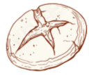
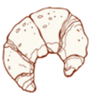
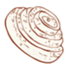

Добро пожаловать в удивительный мир выпечки!
Выпечка – это не просто приготовление пищи, это настоящее искусство, которое доступно каждому. Аромат свежеиспеченного хлеба или торта создает в доме особую атмосферу уюта и тепла.



Выпечка - это вкуссно
В разных культурах мира хлеб и выпечка являются символами гостеприимства и щедрости. Разделить хлеб с кем-то — значит проявить уважение и доверие. Научившись выпекать, вы получаете универсальный язык, понятный людям во всем мире. Присоединяйтесь к нашему сообществу пекарей-энтузиастов! Давайте вместе открывать магию превращения простых ингредиентов в кулинарные шедевры, создавать уют в своих домах и дарить радость через искусство выпечки.